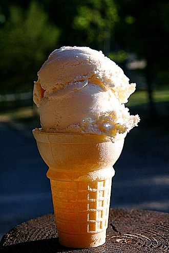

ვანილის ნაყინი - ნაყინი, რომლის ინგრედიენტებში ვანილის ბუნებრივი ან ხელოვნური ექსტრაქტი შედის. პოპულარულია ჩრდილოეთ ამერიკაში, ევროპასა და აზიაში [1]. როგორც ნაყინის სხვა სახეობები, გამოგონილი იქნა კრემის, შაქრის და სუნელის, ამ შემთხვევაში ვანილის ნაზავის ყინულის და მარილის შემცველ კონტეინერზე გაცივებით და ხანდახან არევით [2]. ვანილის სახეობა და, შესაბამისად, გემო განსხვავდება რეგიონის მიხედვით, მაგ. ირლანდიაში პოპულარულია ნაყინი ვანილის ანისულის მსგავსი მსუბუქი არომატით, ევროპის დანარჩენ ქვეყნებში და ამერიკაში კი უფრო ძლიერი, გამოკვეთილი გემო [3]. ვანილის ნაყინი ითვლება ნაყინის "ჩვეულებრივ" "უარაფრო" გემოდ [4].
ვანილი პირველად იმატებოდა საკვებში და სასმელებში დღევანდელი მექსიკის ტერიტორიაზე მცხოვრები ტომების მიერ. XVI საუკუნეში ესპანელმა კონკისტადორებმა ვანილიზ მარჩვლები ესპანეთში ჩამოიტანეს. მათი თქმით ახალ მიწაზე სიმინდის, ვანილის და კაკაოს მარცვლებით, თაფლით და წყლით ტკბილ სასმელს ამზადებდნენ რეცეპტი ესპანეთში, საფრანგეთში და ინგლისში გავრცელდა და მის მიხედვით ვანილს და კაკაოს ერთად იყენებდნენ. ვანილის ცალკე გამოყენება მოგვიანებით დაიწყეს - იმავე დროს დაიწყო ვანილის ნაყინში დამატება. თვითონ ნაყინი გაჩნდა XIV საუკუნის ჩინეთში და გავრცელდა მთელ აზიაში. არაბენმა ნაყინი ესპანეთში შემოიტანეს ყინულით და მარილით გაცივების მეთოდთან ერთად, რის შემდეგაც ნაყინის დამზადება იტალიაში და საფრანგეთში დაიწყეს. კაკაოსგან უკვე გამოყოფილი ვანილი ნაყინში პირველად საფრანგეთში დაამატეს. საფრანგეთიდან ვანილის ნაყინი აშშ-ს მესამე პრეზიდენტმა ტომას ჯეფერსონმა შეერთებულ შტატებში შემოიტანა და საკუთარი რეცეპტიც კი გამოიგონა. ამერიკაში ნაყინის დამზადება პირველად მოსამსახურეების და მონების საქმე იყო [5]. პირველი ნაყინის ავტომატი ამერიკელმა ნენსი ჯონსონმა გამოიგონა XIX საუკუნეში. დღეს ვანილის ნაყინი გავრცელებულია მთელ მსოფლიოში.
თავიდან ვანილის ნაყინს ამზადებდნენ კრემის, შაქრის და ვანილის ნაზავის მარილიან ყინულზე გაცივებით. შემდგომში საფრანგეთში უკეთესი ტექსტურის მისაღებად დაიწყეს კვერცხის ცილის დამატება. კრემის მაგვარი კონსისტენციის შესანარჩუნებლად ნაზავი გაცივების პროცესში იზავებოდა და კონტეინერის კედლებიდან იხსნებოდა მიყინებული ფენა. 1843 ნენსი ჯონსონმა გამოიგონა ნაყინის ავტომატი, რომელიც თვითონ აზავებდა ნაყინს და ხსნიდა ფენას კედლებიდან. მომზადების პროცესი უფრო მარტივი და სწრაფი გახდა, რადგან გაცივების პროცესის შეწყვეტა და კონტეინერის გახსნა ასარევად და კედლებიდან ფენის მოსაშორებლად აღარ იყო საჭირო. ავტომატის გამოყენება დაიწყეს როგორც კომპანიებმა, ასევე დიასახლისებმაც, განსაკუთრებით შაქრის ფასის დაცემის შემდეგ.